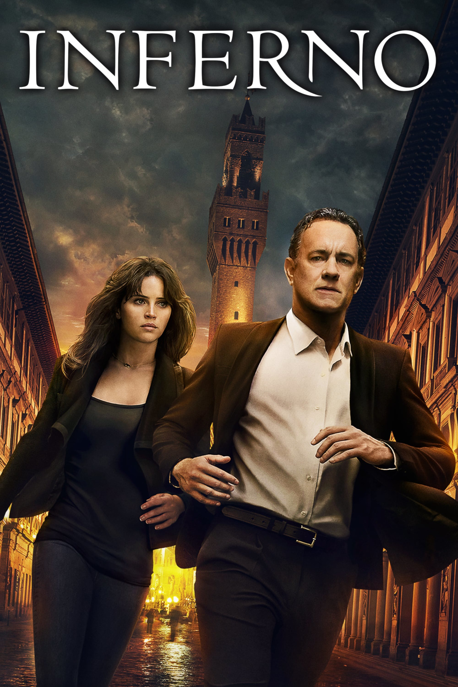

Мировая премьера: 28 октября 2016
Слоган: "Код Да Винчи" и "Ангелы И Демоны" были только началом.
Сюжет: Профессор Роберт Лэнгдон, эксперт по символике, приходит в сознание в одной из итальянских больниц, полностью потеряв память. Местный врач Сиенна Брукс пытается помочь Роберту не только восстановить воспоминания, но и остановить загадочных злоумышленников, которые намерены распространить смертоносный вирус, угрожающий уничтожить половину населения планеты. Разгадка таинственной истории связана с "Адом" – первой частью "Божественной комедии" Данте.
Режиссёр: Рон Ховард
В основе: Роман Дэна Брауна "Инферно" (США, 2013)
Серия: Роберт Лэнгдон
В ролях:
| Том Хэнкс | Профессор Роберт Лэнгдон |
| Фелисити Джонс | Доктор Сиенна Брукс |
| Иррфан Кхан | Гарри "Шеф" Симс |
| Омар Си | Агент Кристоф Бушар |
| Бен Фостер | Бертран Зобрист |
| Сидсе Бабетт Кнудсен | Доктор Элизабет Сински |
| Ида Дарвиш | Марта Альварес |
| Ана Улару | Вайента |
| Пол Риттер | Арбогаст |
Бюджет: $ 75 млн.
Кассовые сборы в США: $ 34 млн.
Кассовые сборы в мире: $ 220 млн.
Продолжительность: 1 ч. 57 мин.
Рейтинг: 6.2